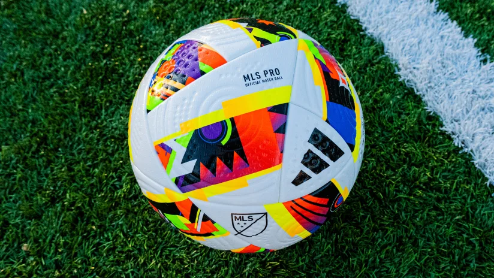

Cristiano Ronaldo dos Santos Aveiro GOIH ComM is a Portuguese professional footballer who plays as a forward for and captains both Saudi Pro League club Al Nassr and the Portugal national team.
Lionel Messi
Lionel Andrés "Leo" Messi is an Argentine professional footballer who plays as a forward for and captains both Major League Soccer club Inter Miami and the Argentina national team.
How To Improve Your Soccer Skils
How do I improve my soccer skills?
The more time you spend with your soccer ball, the better you will become. Practicing soccer drills, tutorials, and playing in games will get you on the right track to improving your skills. You should also work on conditioning, cone dribbling, passing, trapping, and understanding your position to be the best player.
Upcomming Soccer Tournament

National Writer: Charles Boehm
2024 Soccer Almanac: Dates to note for the coming year
The 2024 soccer schedule for all major soccer leagues on ESPN (PH). Includes kick off times and TV listings for Premier League, MLS, La Liga and more.
A year of soccer is gone; long live the year of soccer.
With MLS aiming for new heights, a Summer Olympics, the Copa América returning to North America and continental championship tournaments on tap for Africa, Asia, Europe and Oceania, 2024 promises to be another jam-packed trip around the sun for soccer lovers.
.jpeg)
.jpeg)
.jpeg)